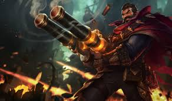

현재 내가 생각하는 OP 정글 챔피언은 그레이브즈이다. 다양한 챔피언이 있지만 정글이 선픽할 때가 많으므로 그브만 연습하면 쉽게 티어를 올릴 수 있다.
그레이브즈는 매 기본 공격시마다 탄환을 소비한다. 최대 장전 가능한 탄환은 2발로, 탄환을 모두 소모하거나 탄환이 1발 남은 상태에서 시간이 지나면 그레이브즈가 직접 탄환을 재장전한다. 재장전 시간 동안에는 기본 공격이 불가능하다. 재장전 시간은 레벨과 추가 공격 속도에 영향을 받으며, 빨리 뽑기(E)를 사용해도 탄환 1발을 얻을 수 있다. 추가 공격 속도는 탄환을 재장전하는 시간을 크게 줄여 주지는 않지만, 장전된 2발의 연사력은 정상적으로 올라간다. 탄환이 하나 남은 상태에서 재장전하든 다 소모하고 나서 재장전하든 장전이 끝나면 탄환은 2개가 된다. 새로운 운명에 걸려 있는 그레이브즈의 첫 번째 패널티. 후술하겠지만 그레이브즈의 평타 데미지는 단순 수치만으로는 상상을 초월하는 딜링 능력을 자랑하며, 일반적인 원거리 딜러들처럼 기본 공격을 사용할 수 있었다면 밸런스적으로 당연히 문제가 되었을 것이다. 이중 총열은 그레이브즈의 기본 공격에 횟수 제한을 두고, 공격의 안정성을 떨어트리는 패널티 역할을 한다. 장전 속도가 그리 느리지는 않고 빨리 뽑기로 탄환 하나를 즉시 보충할 수도 있기는 하지만, 엄연히 지속 딜러인 원거리 딜러군에 속하면서 지속 평타딜을 넣는 데 제약이 있는 것은 굉장히 큰 패널티다. 짧은 사거리와 관통하지 않는 총알 탓에 기대했던 성과를 거두지 못했을 경우에는 장전하는 동안 그냥 깡통, 샌드백이나 다름없다. 매 기본 공격이 위험을 수반한다고도 할 수 있다. 기본 공격을 정해진 횟수만큼 맞아야 깨지는 와드를 지울 때도 상당히 거슬리는 특성. 단적으로 제어 와드 하나를 깨기 위해서도 장전을 최소 한 번은 거쳐야 하며, 기본 공격을 일정 횟수만큼 맞아야 파괴되는 덫이나 소환수에게도 상대적으로 더 시간을 쏟아야 한다.
12게이지단일 투사체를 발사하는 다른 원거리 딜러들과는 다르게 그레이브즈는 기본 공격 시 한 번에 4개, 치명타 발동 시 6개의 투사체를 발사한다. 이 투사체는 일제 사격 등의 스킬처럼 원추형으로 퍼져나가기 때문에 근접해서 공격할수록 목표물에게 더 많은 피해를 입힐 수 있다. 각각의 총알은 모두 적중 시 효과를 발생시킬 수 있지만 효과는 유닛 당 한 번으로 제한되어, 여러 발을 꽂는다고 해서 효과가 여러 번 적용되지는 않는다.[16] 이 공격에 적중한 대상은 공격력과 적중한 탄환의 수에 비례하는 피해를 입는다. 구조물에는 피해가 감소하여 적용된다. 적중한 탄환이 많을수록, 그러니까 그레이브즈가 근접해서 기본 공격을 맞출수록 딜링 기댓값이 더 상승한다. 하나의 대상이 평타 한 번으로 입을 수 있는 최대 피해량은 치명타가 아니더라도 1.99 AD, 치명타 발동 시 피해량은 3.71 AD[17]로 막강한 피해량을 지니고 있다. 온 힛 스킬로 가정하면 기본 공격에 최대 2.71 공격력이나 되는 추가 물리 피해를 덧붙이는 셈인데, 온 힛 스킬은커녕 다단히트 계열 스킬들 중에서도 이만한 계수를 가진 스킬은 전무하다. 간단히 말해서 공격력이 충분히 받쳐 줄 때 영거리에서 쏘는 기본 공격은 스킬보다 세다. 단순 평타만으로 누킹을 하는 셈. 범위가 넓지 않아서 여러 대상에게 총알이 맞는 일이 자주 벌어지지는 않지만, 어쨌거나 총알이 하나의 대상에게 전부 꽂히지 않더라도 허공에 날아가지만 않으면 손해가 아니다. 최대 레벨 기준으로 단 1발의 총알조차도 1 공격력, 즉 일반 챔피언의 기본 공격만큼이나 강하기 때문에, 적 다수에게 골고루 총알이 꽂힐 경우 상당히 막강한 광역딜을 넣는 것이나 마찬가지다. 실제로 그레이브즈는 확산되는 평타 때문에 라인 클리어를 아주 기가 막히게 해낸다. 평타로 누킹도 되고 광역딜도 된다고 보면 된다. 강력한 화력이 전부 생명력 흡수로 전환되는 만큼, 흡혈 아이템이 갖춰진 이후에는 그레이브즈의 전투 지속력을 끌어올리는 요소도 된다.
산탄그레이브즈의 기본 공격은 유닛을 관통할 수 없다. 이 말은 즉슨, 그레이브즈의 모든 기본 공격은 사거리 425짜리 직선 논타겟 스킬이 된다는 것이다. 기본 공격 범위를 벗어나면 상대는 공격을 피할 수 있다.[18] 또한, 챔피언을 제외한 유닛은 2발 이상의 총알에 맞을 경우 뒤로 밀려난다. 기본 공격의 투사체가 유닛을 관통하지 않는다는 패널티는 앞선 장탄 제한과 합쳐져 그레이브즈의 딜링 구조를 제약한다. 그레이브즈의 입장에서는 목표물이 아닌 모든 대상이 움직이는 바람 장막, 방패 세운 브라움이나 마찬가지인 것. 심할 경우 적 챔피언, 포탑,[19] 제어 와드 등 온갖 장애물이 총알을 다 막아서 원래 의도했던 공격 대상은 한 대도 안 맞고 멀쩡한 경우도 있다. 산탄의 챔피언 외 유닛 넉백 효과는 그레이브즈가 정글을 안정적으로 돌게 해 주는 원동력이기도 하다. 이 효과 덕분에 근접 몬스터는 카이팅하면서 잡을 수 있고 원거리 몬스터는 연막탄 안에 계속 밀어넣으면서 공격을 하지 못하게 만들 수 있다. 강가의 바위 게 또한 평타 한대로 방어력과 마법 저항력을 영구적으로 떨어트릴 수 있으며, 만약 몬스터에게 오른의 불안정 상태가 걸렸다면 그것도 터진다. 물론 내셔 남작이나 드래곤처럼 CC 면역인 몬스터에게는 적용되지 않고, 장탄 수 제한이 있어서 한 대도 안 맞고 정글을 돌기는 무리지만, 초반 체력 관리에는 충분하다. 상기한 여러 이유들로 인해 그레이브즈가 평타딜을 확실하게 넣기 위해서는 미리 잠재적 방해 요소를 배제해 두거나 목표물에 실제 사거리보다도 더 근접해서 총탄을 퍼부어야 한다. 그런데 그레이브즈의 사거리는 425고, 이는 필연적으로 카이팅을 할 때 적의 사거리 내에서 인파이팅을 강제하게 만든다. 또한 탄환은 두 발, 빨리 뽑기로 하나를 보충하더라도 두 발 내지는 세 발. 이 동안에는 기본 공격이 봉인되므로 위험을 감수하고 뛰어들었다면 짧은 시간 안에 적은 탄환으로 적에게 치명상을 입힐 만큼 화력을 뽑아내야 한다. 그레이브즈가 같은 원거리 역할군으로 분류되는 대부분의 챔피언들과 다소 다른 템트리를 선호하는 이유. 새로운 운명으로 인한 기본 공격의 남다른 특징은 그레이브즈가 라이너로 활용되지 않는 이유이기도 하다. 발수 제한과 비관통 판정 탓에 그레이브즈는 라인에서 안정적으로 CS를 챙기기가 힘든 편이고, 일부러 라인을 당기거나 적정선에 형성하는 등의 섬세한 조절이 어렵다. 또한 평타 견제 싸움에서 대부분의 원딜에게 압도적으로 불리하며 사거리가 짧은 챔피언을 상대로도 강력한 평타 견제를 넣을 수 없다. 탄창 제한은 지속딜 차원에서 그레이브즈가 일반적인 원거리 역할군 챔피언에 비해 불리하게 만들며, 특히 탱커를 상대로 활약하기 어렵게 한다. 원딜로 쓰기에는 라인전도 약하고 불안정한데다 후반 성장성도 나쁘며, 그렇다고 다른 라인에 보내서 안티 캐리를 의도하기에도 그만한 라인전 능력을 기대할 수 없는 셈이다. 실명에 걸렸을 때 기본 공격을 하면 지정한 대상이 있는 방향이 아니라 엉뚱한 방향으로 휙 돌아서 산탄을 발사하도록 되어 있는데, 이때 발사되는 투사체에도 엄연히 판정이 존재하기 때문에 엉뚱한 적에게 공격을 가할 수도 있다. 공격이 아예 증발하는 것이 아니라는 점에서 다른 챔피언들보다는 약간 낫지만 적에게 사방을 둘러싸인 가망 없는 상황이 아닌 이상 확률이 낮고 목표물은 무조건 빗맞히기에 딱히 유용한 효과는 아니다. 그나마 실명에 걸렸을 때 주변의 다른 목표물에 공격 명령을 내려 적 쪽으로 공격이 나가길 기대하는 도박 정도는 가능.